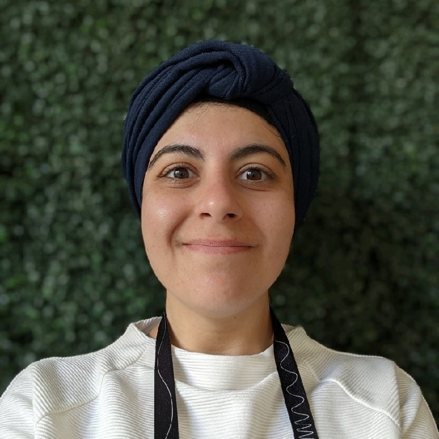

|
Zeinab Abboud
About: I'm a PhD candidate in Computer Engineering at the MedicalLab in Polytechnique Montreal - University of Montreal and at Mila. I am also currently the Program Manager of the Responsible AI Leadership program by AI 2030 by FinTech4Good
Professional Summary: Before pursuing my PhD, I spent over four years as a Metrology Scientist/Engineer at Illumina and Teledyne MEMS, where I developed and implemented advanced metrology methods for manufacturing quality control. At Illumina, I led the development of algorithms for automated defect detection, software development, and the full lifecycle integration of quality control (QC) processes for new product introductions (NPI). My work focused on metrology solutions for DNA sequencing consumables, addressing challenges in defect detection, optical properties measurement, and critical optical dimensions. At Teledyne MEMS, I was the lead metrology SME for R&D QC methods for extreme UV pellicle for ASML, led the efforts for process-product failure analysis. I have been recognized with multiple distinctions throughout my professional and academic careers.
Education: I hold an M.A.Sc in Engineering Physics from Polytechnique Montreal - University of Montreal and a BSc. in Nanoscience with a double minor in Mathematics and Physics from University of Guelph.
Research Interests: I'm interested in computer vision, efficient uncertainty estimation, and robustness to covariate distributional shifts in applications to medical imaging.
Latest Updates:
CV /
Scholar /
Github
|

|
Selected Publications
Conference Proceedings
- Sparse Bayesian Networks: Efficient Uncertainty Quantification in Medical Image Analysis. (2024). MICCAI, Early Acceptance (11% of submissions, total acceptance rate 30%). Paper | code
- Impact of train- and test-time Hounsfield unit window variation on CT segmentation of liver lesions. (2023). SPIE Medical Imaging. Paper
Journal Articles
- 500-period epitaxial Ge/Si0.18Ge0.82 multi-quantum wells on silicon. Journal of Applied Physics (2023). Paper
- Temperature-dependent in situ studies of volatile molecule trapping in low temperature-activated Zr alloy-based getters. (2017) J. Physical Chemistry C. Paper
Invited Talks
- Wafer-Level Packaging of Microbolometers for Uncooled Thermal Cameras. (2018) The ElectroChemical Society (ECS): Americas International Meeting on Electrochemistry and Solid State Science (AiMES). Cancun, Mexico.
- Materials Science in Modern MEMS: Challenges and Opportunities. (2017). Le Regroupement québécois étudiant sur les matériaux de pointe (RQEMP). Bishop’s University, Sherbrooke, Canada.
|
Professional Experience
- (2024-) Responsible AI Leadership Program Manager at AI 2030, Remote
- (2023-2024) Globalink Mentor at Mitacs, Montreal, QC
- (2018-2020) Metrology Engineer II at Illumina, San Diego, CA
- (2016-2018) Metrology Scientist at Teledyne MEMS, Bromont, QC
Open Source Contributions
- (2023-) Found a bug in Pytorch Sparse module in convolutions ... IP
- (2024) Joined Pytorch Docathon Organization
- (2024) Pytorch Docathon H1 Contributor, 5 issues closed in one PR
- (2023) Pytorch Docathon H2 Contributor, ranked #2 out of 170 registrants. 5 PRs closed
- (2023) Pytorch Docathon H1 Contributor, ranked #3 in 110 participants.
|
Selected Awards & Distinctions
Academic
- (2024) WiML NeurIPS Travel Award
- (2024-) FRQNT PhD Scholarship (Ranked no.1 in Techniques, Measurements, & Systems committee)
- (2020-2023) NSERC Postgraduate Scholarship-Doctoral (PGS-D) (converted to CGS-D)
- (2017) Nominated for Best Thesis Award, Polytechnique Montréal
- (2017) Best Masters Thesis, Engineering Physics, Polytechnique Montréal
- (2016) Best poster award at 10th NAMIS International Research Network, University of Tokyo, Japan.
- (2015-2016) MITACS Graduate Student Scholarship
- (2013-2014) Dean’s Honours List, University of Guelph
- (2014) Featured in University of Guelph’s Co-op Success Stories
- (2013) NSERC Industrial Undergraduate Student Research Award
- (2013) University of Alberta Research Experience (UARE) Award
- (2013) Nominated for Co-op Student of the Year Award, University of Guelph
Professional
- (2025) Awarded Program Manager of the Year by AI 2030
- (2020) FoFee Award for Technical Excellence in driving software development and automation for NPI projects. illumina, USA
- (2020) Spot bonuses for going above and beyond in leading software development, automation, and improvement of image analyses to production. illumina, USA
- (2017) Nominated for Employee of the Year Award in Technology Innovation. Teledyne MEMS, Canada
|
|
Languages: English (Fluent), Arabic (Fluent), French (Advanced - C1)
|
|
|
{kind=link}